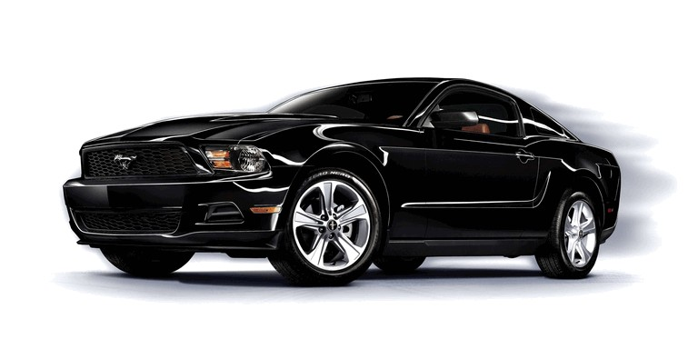
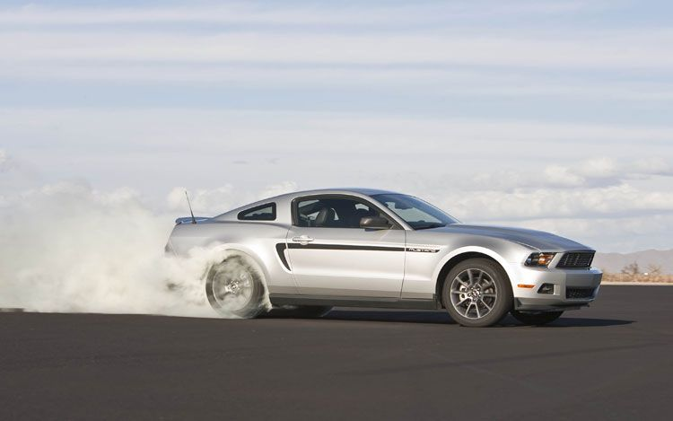
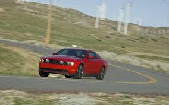

Encyclopedia of the 2010 Mustang V6
Table of Contents:
Basic Specifications
With the launch of the 2010 mustang, there were two varients. The V6 and the V8. The V8 contained a bigger engine producing more power, althought lacked some reliability. The V6, although smaller, was more consistant and for the most part had less problems. As the point of this page is to discuss the V6 varient, here are some basic specifications regarding the 2010 V6 Mustang:
- 4.0-liter V6 engine
- 5 speed automatic/manual transmission
- 2 doors (Coupe)
- 3,401 to 3,533 lbs curb weight
- 188" Length x 74" Width x 56" Height
- 107.1" wheelbase
- 9.6 to 13.4 ft³ cargo volume
- 9.7 compression ratio
- 18 mpg city/26 mpg highway

Power & Acceleration

- 2010 horsepower at 5,300 rpm
- 240 pound-feet of torque at 3,500 rpm
- 6.6 seconds to 60 mph
- 15.3 second quarter-mile at 93 mph
- 112 mph top speed, without limiter over 135 mph
Click here to see a video of it's acceleration!
Brakes & Handling
- 182 foot stopping distance from 70 mph
- Substantial dive on hard braking
- Relatively loose suspention
- Electronic stability control is standard
- Slight understeer on turn-in
- Roadholding, 300-ft-dia skidpad: 0.85 g

Thank you for viewing my encyclopedia!
Click here to go to a different encyclopedia of Vox Machina!